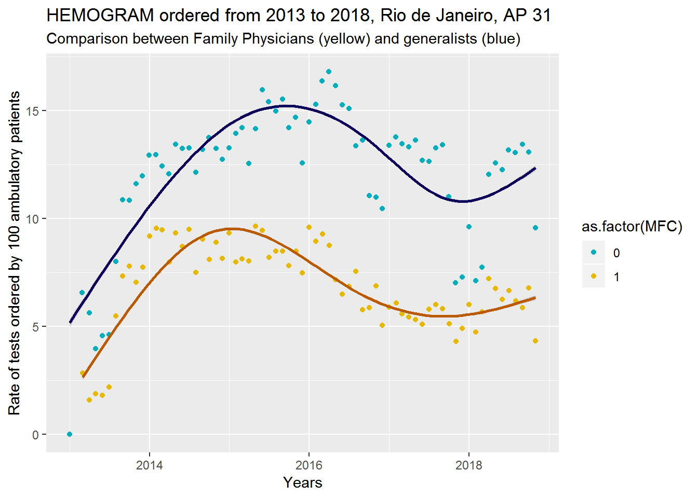

Chapter 6 Hospital Admissions
Hospital admissions Data base (hadb) contains information about every hospital admission that happend in a municipal hospital since 2008. Until 2013 there is also information from state and federal hospitals. After this period I’m still waiting for this information from the state secretary of health.
The variables selected for the study are:
- NUMAIH - unique number for each hospital admission record
- PROCEDIMENTO - type of procedure required for the patient
- BAIXA - date of patient admission
- ALTA - date of patient discharge
- MUN_HOS - city of the hospital
- CNES - unique code for every hospital
- MOTIVO_SAIDA - reason for patient discharge
- NOME_PACIENTE - name if the patient
- SEXO - sex
- NASC - date of birth
- MUNIC_RES - place of residence (city)
- RUARES - place of residence (street)
- NUMRES - place of residence (number)
- COMPRES - place of residence (apartment)
- BAIRES - place of residence (neighbourhood)
- UFRES - place of residence (state)
- CEPRES - place of residence (postal code)
- IDADE - age
- NOME_PAI - father’s name
- NOME_MAE - mother’s name
- DIAG_PRINC - main ICD-10 code that lead the hospital admission
- CIDSE - secondary ICD-10
- CIDCO - secondary ICD-10
- CIDOB - obstetrics
load('csaps.RData')
desenhaCSAP(csaps)